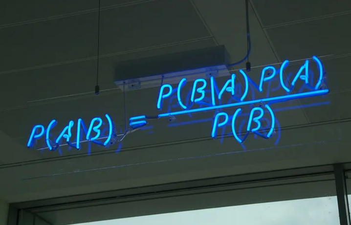

Portfolio
Here I showcase some of my projects of all sizes as the result of my self-driven/taught passion towards Data
Core Competencies
- Languages: Python, SQL, Bash, R
- Methodologies: EDA, CRUD, Web Scraping, Statistical Methods, Probability, Machine Learning, Time Series Analysis
- Tools: VS Code, PostgreSQL, Tableau, MSExcel, PowerBI, LookerStudio, AWS : S3, EC2, ECS, Lambda, Athena, ECR, Cloudwatch.
Projects
- PMI - Project Management Professional (PMP®)
- freeCodeCamp - Data Analysis with Python
- Jovian - Data Analysis with Python: Zero to Pandas
- Kaggle - Advanced SQL
- Kaggle - Intro to Machine Learning
- IBM CognitiveClass - R Essentials
- IBM CognitiveClass - Data Science Foundations - Level 2 (V2)
- IBM CognitiveClass - Applied Data Science with Python - Level 2
- AWS - Cloud Quest: Cloud Practitioner
Data Analysis
Projects of fCC: Data Analysis with Python


In this course, I assimilated the fundamentals of Python within the field of DA. Instead of using Replit - and for the benefit of time/location - I built, run and debugged my main.py files by utilizing the unit tests in my local machine within VS Code.
In this repository, I responded to the posed questions in some of the study cases of the course "8 week SQL challenge" by Danny Ma (Data with Danny).
From main and basic SQL syntaxis to the elaboration of more complex structures, design of CTEs and utilization of built-in functions, these series of mini-cases were a well disposed - and yet great - way to review the essential knowledge of SQL.
EDA with Python: Sleep health and lifestyle
In this course project, I have performed basic Exploratory Data Analysis on sleeping and lifestyle habits.
Many of the essential funcions and methods of `Pandas` and `NumPy` are shown here, as well as the fundamental plot functions within the Matplotlib and Seaborn libraries for Python.
Python with BeautifulSoup for Web Scraping
Web Scraping intro to be here.
Data Engineering
In this project, I designed and detailed the core stages of an end-to-end data pipeline using Google Cloud Platforms as the main resource/service provider. The orchestration of the ETL process is executed with Mage.
Azure Tokyo Olympics end-to-end pipeline
Description to be here
{kind=link}
{kind=link}
{kind=link}